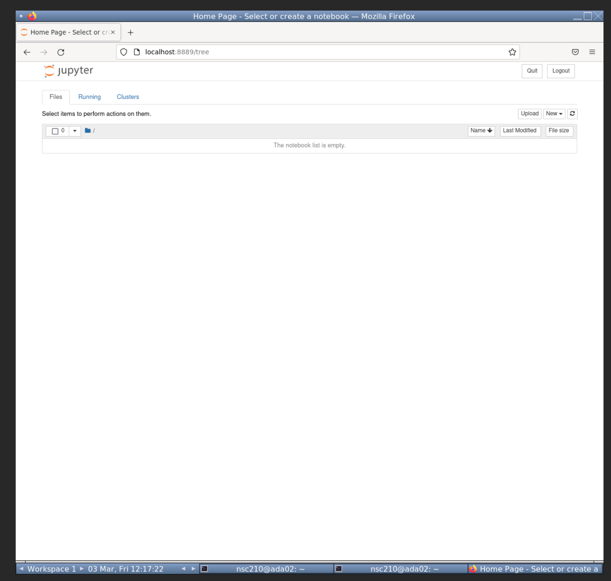
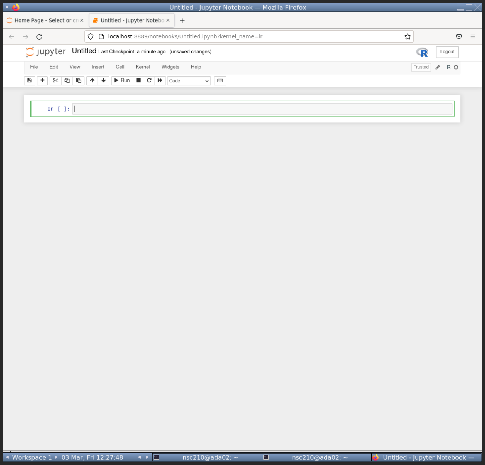
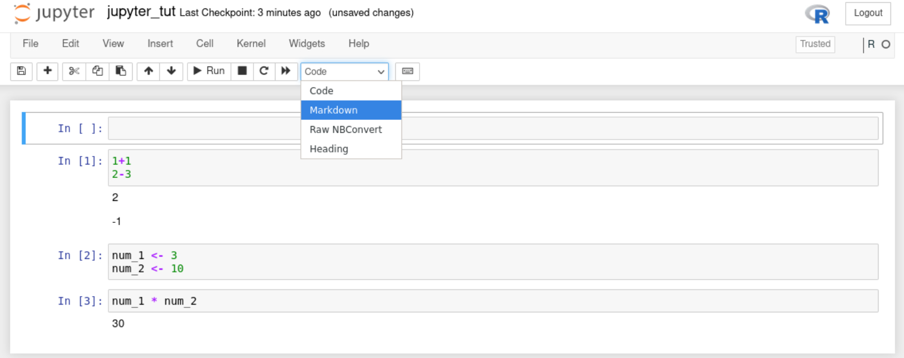
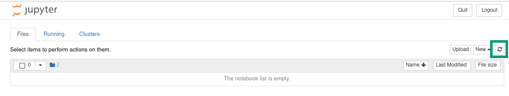

Chapter 5 Loading data into R and DADA2
Before we can start we first need to make a directory which will be used to contain all the files you generate throughout this workshop.
To do this type the commands shown in black below. Lines starting with a # character are comments describing what the code will do, and you do not need to type these (the light blue text in the box below).
#Change directory to home
cd ~
#Make a directory in home called "UKDNA_Metabarcoding"
mkdir UKDNA_Metabarcoding
#Change directory to "UKDNA_Metabarcoding"
cd UKDNA_MetabarcodingYou will need to load the metabarcoding tools before continuing. Carry this out with the following command.
Note: Ensure you include the dot and space (. ) at the start before usemetabarcoding
5.0.1 Open Jupyter-notebook
The first step is to open jupyter-notebook. Run the below command in your (meta_barcode) environment.
This will open jupyter-notebook in firefox. We won’t need to access the linux terminal anymore. Leave the terminal running jupyter-notebook and full screen your firefox so you should see something like below.

5.0.2 Create R notebook
The next step is to create a R notebook.
- Click on the “New” button towards the top right, right of the “Upload” button.
- From the dropdown click “R” below “Python 3 (ipykernel)”.
This will open up a new R notebook like below.

5.0.3 Cells and code
Jupyter-notebook uses cells (the gray boxes) to separate code. This is very useful to compartmentalise our code.
There will already be one cell. Within the cell, type in the below commands.
When pressing enter in cells it will create a new line. To run all commands in a cell press CTRL + enter.
Run your current cell and you should see something like below.

5.0.4 Create new cells
You can create new cells by 2 different means.
- Press the
+button on the tool bar (between the floppy disk ( ) and scissors( ). ). This will add a cell below your currently selected cell. - Click on the
Insertbutton and use the dropdown to add a cell above or below your currently selected cell.
Tip: Hover over the toolbar icons to display a text based description of its function.
With that knowledge add a second cell below the first cell. Add the following code to your second cell but do not run it.
Tip: Notice there are green lines around your selected cell.
Insert a third cell and add the following code to it. Do not run the code.
5.0.5 Running code
Try to run the code in the third cell. There should be an error as we have not created the objects num_1 & num_2. We have only written the code for these objects but not run them.
We can run all the code in a notebook starting from the first cell to the last cell.
To run all cells from the start:
- Click on the “Cell” button.
- Click “Run All” from the drop-down options.
You should then see something like the below in your notebook.

There is no output printed for cell 2 because we are assigning variables. However, the correct output for Cell 3 is below it. This is because the variables were assigned in cell 2 before cell 3 was run.
5.0.6 Saving the file
As with RStudio and other good coding interfaces we can save our notebook.
First we should rename the file. Rename the notebook to “jupyter_tut”:
- Click on the name of the notebook, currently called “Untitled”.
- This is at the very top of the notebook, right of the Jupyter logo.
- A pop-up called “Rename Notebook” will appear. Change the Name to “jupyter_tut”.
- Click “Rename”.
Now we can save the file. Two methods to save are:
- Click the floppy disk ( ) on the toolbar.
- Click on the “File” button. Click “Save and Checkpoint” from the dropdown options.
5.0.7 Title cells with markdown
We will be using multiple notebooks in this workshop. We will also have multiple sections per notebook. It will be useful to create header cells with markdown to create visual separation of the different sections.
To add a header cell to the top of our notebook:
- Create a new cell at the top of the notebook.
- Click on the “Code” drop down and select “Markdown”.
- The “Heading” option no longer works.

- Add the following to the “Markdown” cell to create a first level header.
- Ensure you have a space between the
#and header text (“Tutorial”).
- Ensure you have a space between the
Great, we can now add nice headers in our notebooks. Save the notebook once more before carrying on to the next section.
You won’t need to know more about Markdown but if you are interested please see the Markdown guide.
5.0.8 Close the notebook
To close the notebook:
- Click on “File”.
- From the dropdown options click “Close and Halt”.
When you are back in the file explorer page you may not yet see the new file you saved. If so, you will need to refresh the page with the Refresh button ( ) towards the top right.

With that quick tutorial of jupyter-notebook we can start our metabarcoding analysis.
5.1 Workshop notebook
Create a new R notebook called “DADA2_analysis_pipeline_MiFish-U_primer_set”.
- Add a markdown cell with the first level header: # MiFish-U primer set analysis using DADA2
5.2 Loading DADA2
To start with we will need to load a few packages (see section 3.2.3 for a description of what a package is if you are not familiar with R) which we will need for running the first part of our analysis. First add a new code cell and type the following and run the cell to load the following package libraries.
5.3 Loading our data
5.3.1 Saving the paths for our input and output directories
We are now nearly ready to input our data but first we need to set the main paths we will be using which contain the input files (the raw sequencing data files) and where we want to save the output files we generate (the ‘UKDNA_Metabarcoding’ directory we made above).
In a new code cell type the following and run:
input.path <- "/pub14/tea/nsc206/NEOF/metabarcoding_workshop/trimmed"
output.path <- "~/UKDNA_Metabarcoding"In a new code cell we can now check what files are contained in our input directory. Type and then run the following:
You should see a list of paired fastq sequencing files listed. Forward and reverse fastq filenames have format: SAMPLENAME_L001_R1_001.fastq and SAMPLENAME_L001_R2_001.fastq.
This shows that we have set our input path correctly.
From now on you will get less instructions on your notebook structure. Please create your own coding and markdown cells where you think appropriate.